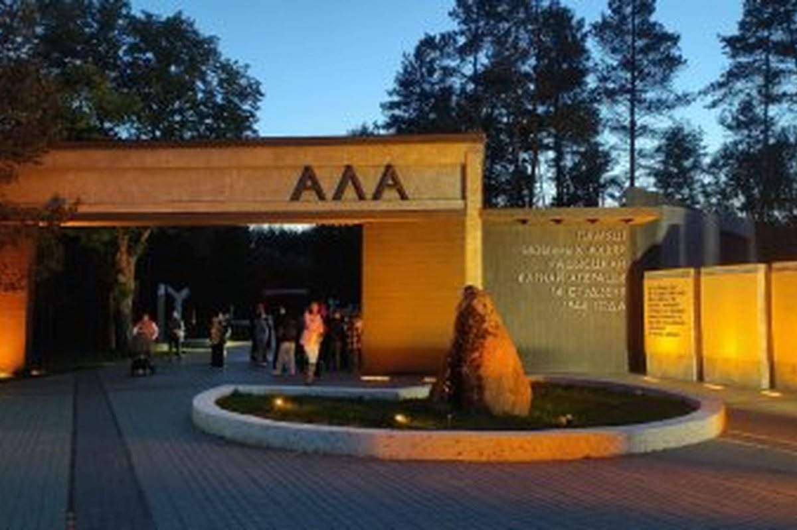
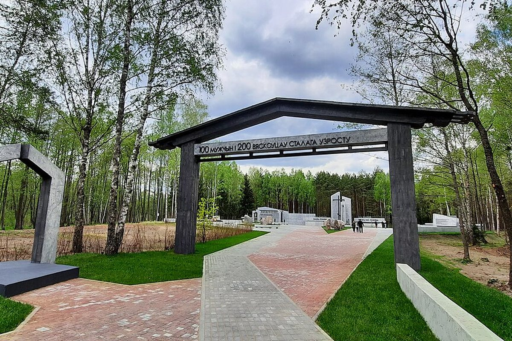
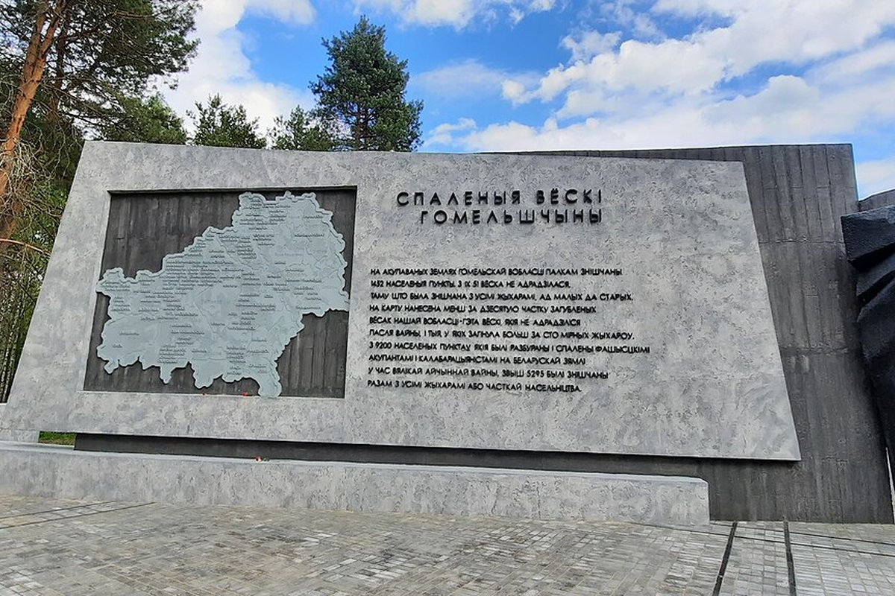

A village in the Svetlahorsk district burned on 14 January 1944. 1,758 civilians died, including 950 children.
Ola is a village in the Svetlahorsk district known since 1795. During the war it suffered the fate of Khatyn.
On the morning of 14 January 1944 a German punitive detachment with a military unit of about a thousand soldiers surrounded the village. People were driven into houses and set on fire; those who tried to escape were shot. 1,758 civilians died, including 950 children.
The village was never rebuilt. In 1958 a monument was erected on the mass grave — a sculpture of a kneeling soldier with a wreath.
The Ola memorial complex opened in spring 2020. It includes an entrance group, a memorial zone and a walking route along the former village street; at the centre are a cross, a bell and a bell tower with bells for each village whose residents died here.


